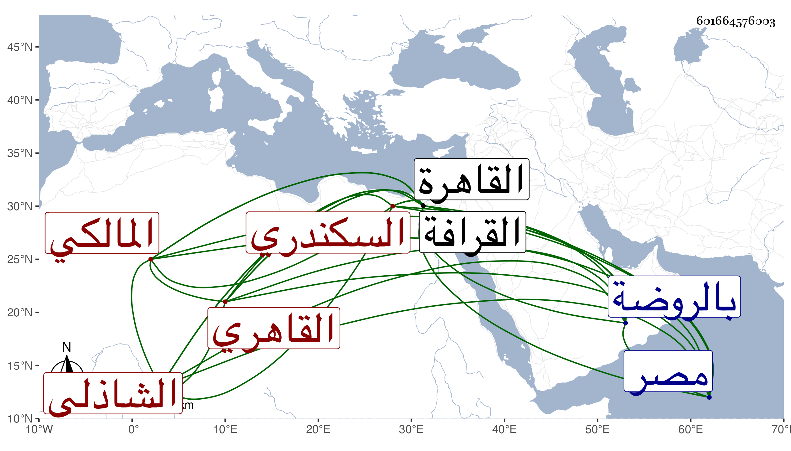

0902Sakhawi.DawLamic.ITO20230111-ara1.EIS1600.601664576003
Biography ID: 601664576003
186
محمد بن أحمد بن محمد بن محمد بن النجم محمد فتح الدين أبو الفتح بن الشهاب أبي العباس السكندري الأصل القاهري المالكي الشاذلي وهو بكنيته أشهر ويعرف بابن وفا وأظنه النجم ثالث المحمدين وقد يحذف محمد الثالث بل ربما يحذف الثاني ويقتصر فيهما على ابن وفاء . ولد قريبا من سنة تسعين وسبعمائة بالقاهرة ونشأ بها فحفظ القرآن وكتبا وأخذ عن العز بن جماعة والبساطي والبرماوي وغيرهم وسمع مجلس الختم من البخاري على ناصر الدين الفاقوسي في سنة إحدى وثلاثين وبرع وقال الشعر الحسن وتكلم على الناس بعد عمه على بن محمد وفا وصار أعلم بني وفاء قاطبة وأشعرهم وكان على يشير إلى أن مدد أبي الفتح من أبيه مع كون الأب لم يتكلم ، وحضر مجلسه الأكابر كالبساطي والبرماوي وغيرهما من شيوخه والشرف عيسى المالكي المغربي بل وممن حضر عنده الظاهر جقمق قبل سلطنته . وقد حضرت مجلسه وسمعت كلامه ، وكان له رونق وحلاوة ولكلامه عشاق . مات بالروضة في يوم الاثنين مستهل شعبان وقيل رابعه سنة اثنتين وخمسين وحمل إلى مصر فصلى عليه بجامع عمرو ودفن بتربتهم بالقرافة وقد زاد على الستين وكانت جنازته مشهودة ، ومن نظمه :
| يا من لهم بالوفا يسار | بأنسكم تعمر الديار |
| لخوفنا أنتم أمان | لقلبنا أنتم قرار |
| بوبلكم جدبنا خصيب | بوجهكم ليلنا نهار |
| لكم تشد الرحال شوقا | وبيتكم حقه يزار |
وله أيضا قصيدة أولها :
| الروح مني في المحبة ذاهبه | فاسمح بوصل لأعدمتك ذاهبه |
| عرفت أياديك الكرام بأنها | تأسو الجراح من الخلائق قاطبه |
| قد خصك الرحمن منه خصائصا | فحللت من أوج الكمال مراتبه |
ومن نظمه اكتفاء :
| لقد تعطشنا فروحوا بنا | نرو بهذا الوقت وقت الرواح |
| وإن نأى الساقي فنوحوا معي | عونا فأني لا أطيق النواح |
